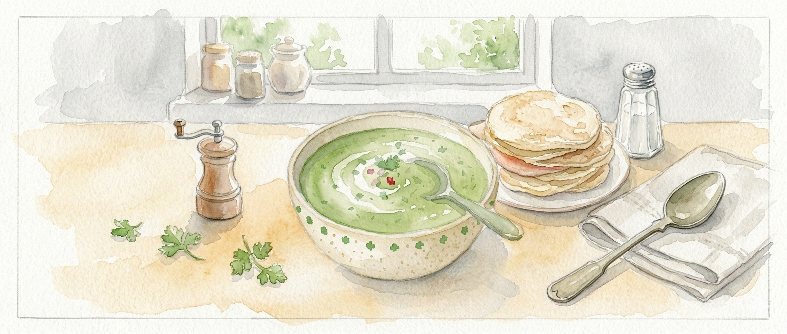
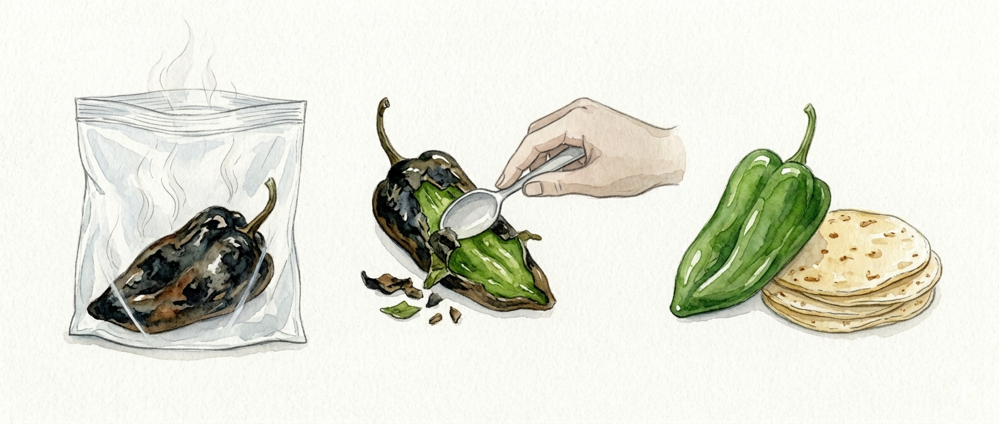

Ingredientes
Tomate verde , Chile poblano , Cebolla , Ajo , Crema acida , Cilantro


Tomate verde , Chile poblano , Cebolla , Ajo , Crema acida , Cilantro

Si sientes muy acido o amargo su salsa agrega una pixca de bicarbonáto sodio